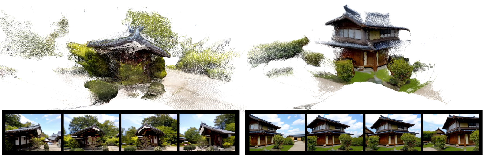
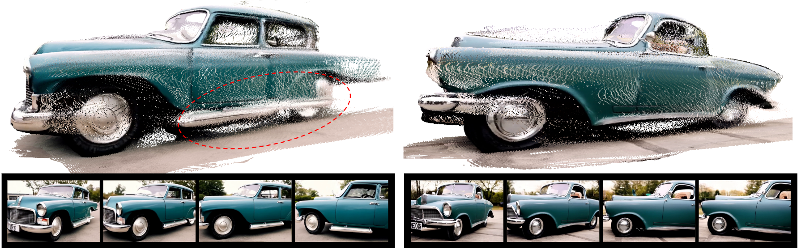
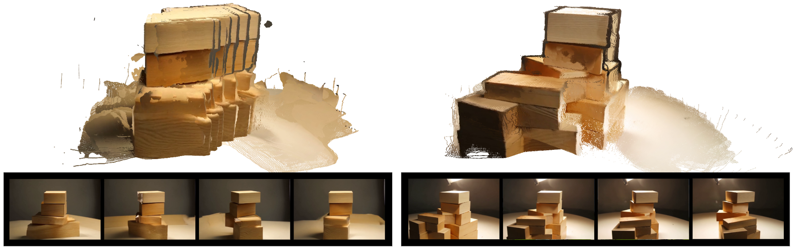
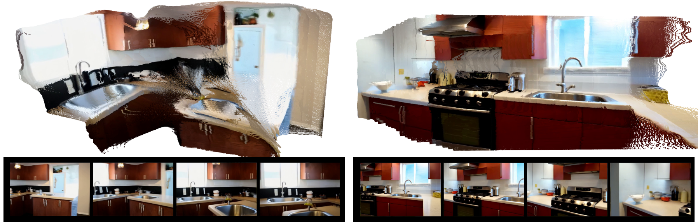

We introduce GeCo, a geometry-grounded metric for jointly detecting geometric deformation and occlusion-inconsistency artifacts in static scenes. By fusing residual motion and depth priors, GeCo produces interpretable, dense consistency maps that reveal these artifacts. We use GeCo to systematically benchmark recent video generation models, uncovering common failure modes, and further employ it as a training-free guidance loss to reduce deformation artifacts during video generation.
GeCo measures geometric consistency of generated videos. Motion Map highlights motion inconsistency between object motion and motion induced by camera (deformation). Structure Map highlights depth reprojection errors that can detect suddenly appearing/disappearing objects, which compensates the motion map in occlusion regions. Our metrics clearly detect various artifacts in generated videos, highlighted in each error map:
Videos in the left column are generated by CogVideoX-5B without guidance. Videos in the right column are generated by CogVideoX-5B with GeCo guidance in a training-free manner. GeCo effectively reduces various deformation artifacts observed in the baseline:
We further show GeCo leads to better reconstruction quality by predicting point clouds using generated videos. The point cloud is generated by VGGT.




We observe a common failure mode where models fail to generate a static globe while camera orbits, a phenomenon we refer to as "the globe that can't be stopped." By applying GeCo guidance, we demonstrate that spurious object motion is effectively suppressed, ensuring the object remains static relative to the environment. This example demonstrates the improvement on CogVideoX-5B.
Similarly, models often struggle to generate static living subjects during camera orbits. For instance, when the prompt requires a dog to remain perfectly still, the baseline often hallucinates unintended animation or drift. By employing GeCo guidance, we successfully eliminate this spurious motion, ensuring the subject remains relatively frozen. The results shown here are generated using CogVideoX-5B.